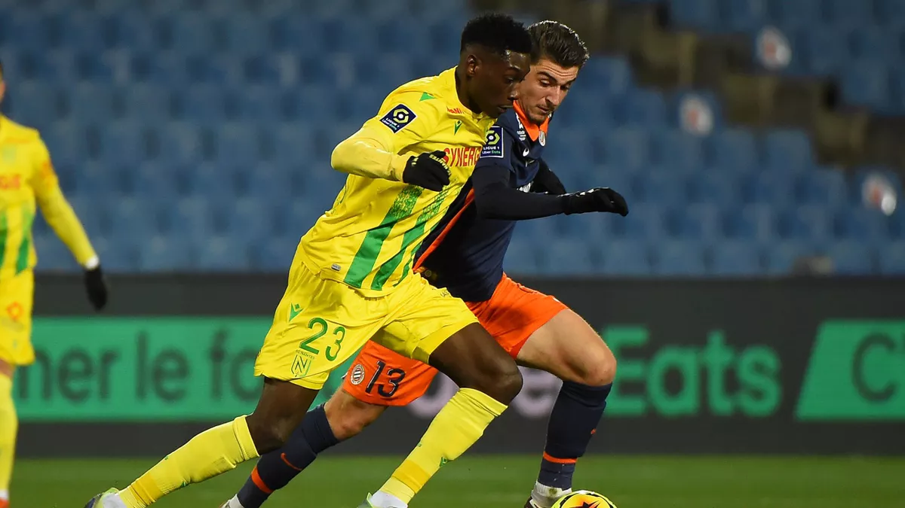

INFORMATIONS
CLASSEMENTS
CLENDRIER
Rankings
BUTEURS
PASSEURS
INSUBMERSIBLE MBAPPÉ, JUNINHO LORIENTAIS ET DOGUES MUSELÉS : LES TOPS ET LES FLOPS DE LA 30E JOURNÉE...
LIGUE 1 - LONGORIA : "IL FALLAIT REMETTRE LE FOOTBALL AU CENTRE DU PROJET DE L'OM"
ON A RETROUVER LE PSG DU CAMP NOU...PENDANT 60mn
LIGUE 1 - JUSQU'À 1 AN FERME POUR DES "CADRES" DE GROUPES DE SUPPORTERS APRÈS LES INCIDENTS À L'OM
GROS MAL DE CRANE POUR L'OM: "EN SECONDE PERIODE ON ETAIT PAS LA"
LES NOTES DU PSG, VAINQUEUR À LYON (2-4) : VERRATTI-MBAPPÉ, UN DUO EN OSMOSE
LIGUE 1 - GROS COUP D'ARRÊT POUR LILLE BATTU PAR NÎMES (1-2)
LIGUE 1 - NANTES NE CONFIRME PAS SON SUCCÈS À PARIS, DIJON COULE TOUJOURS PLUS
LIGUE 1 : GRÂCE À SON SUCCÈS À STRASBOURG, LENS PASSE DEVANT L'OM ET S'INSTALLE À LA CINQUIÈME PLACE
AVANT OL-PSG : QUELLE TRACE LAISSERA MEMPHIS DEPAY À LYON ?
QUIZ - LYON - PARIS SAINT-GERMAIN : ILS ONT JOUÉ À L'OL ET AU PSG
LIGUE 1 - NANTES : RANDAL KOLO MUANI, LE SALUT DES CANARIS PASSERA PAR LUI
LIGUE 1 - L'OM DE SAMPAOLI EXPLOSE À NICE (3-0) : "EN SECONDE PÉRIODE, ON N'ÉTAIT PAS LÀ"